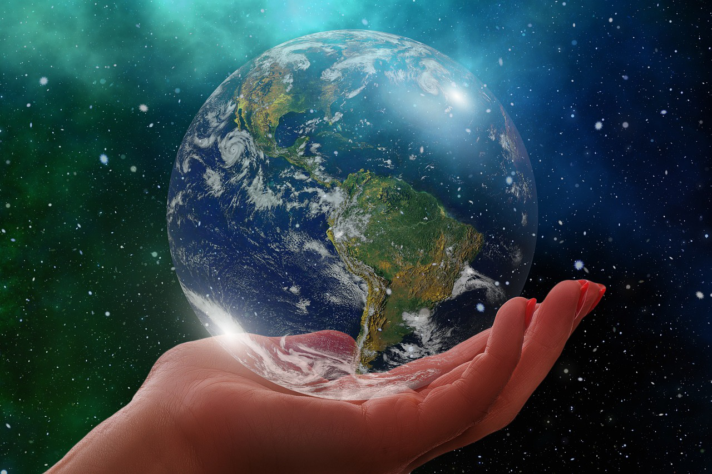

Environment commitment
The effects of climate change, human intervention in nature and the scarcity of natural resources affect us all.
At Handmade we are determined to continue our collective efforts to mitigate the effects of climate change.
We are committed to reducing our emissions by more than 80%, which is why we have set ourselves ambitious sustainability targets.
Sustainability
That's why all our designers are trained in sustainability, always open to new ideas and constant experimentation, true to the culture of innovative thinking that characterises us.
How do we do this?
We pay special attention to the impact of the raw materials we include in our products, such as cotton, the fibre we use most in our garments and workmanship. Choosing innovative, organic or recycled raw materials is key to reducing emissions and making a cleaner and more efficient use of water and energy.
Ecological products
The paints we use are 100% natural ecological, i.e. they do not contain any of the components of traditional synthetic paints, such as formaldehyde, heavy metals (mercury, lead, cadmium...) and VOCs, such as acetone. Only in this way, we achieve a better world, free of pollution.
